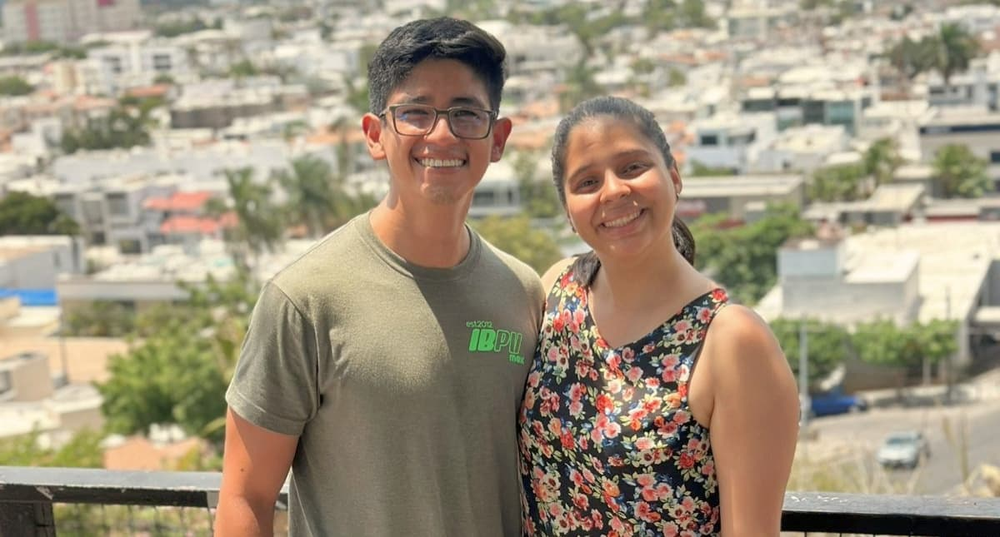
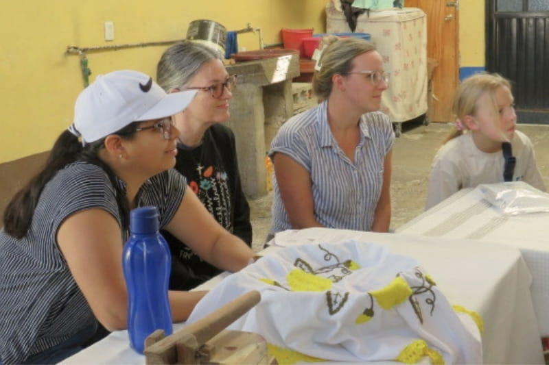
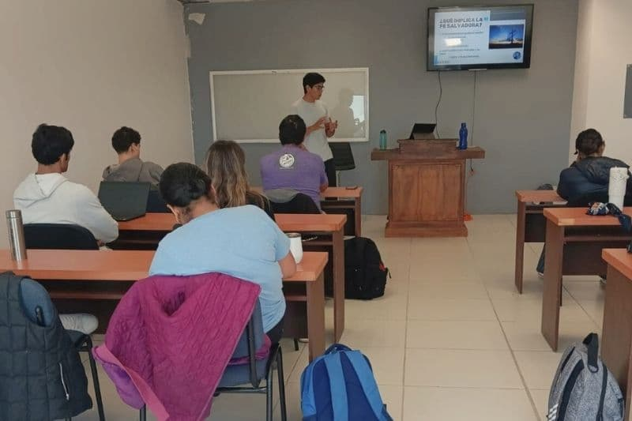

Tu oración y acompañamiento mensual sostienen nuestra vida como familia misionera al servicio de niños y jóvenes.
¿Por qué existe este espacio?
Esta aventura de fe nos ha enseñado, una y otra vez, el valor de la compañía. Desde que comenzamos nuestra etapa de formación en México, hemos sido testigos de la fidelidad del Señor de maneras profundas y muy concretas. Él ha usado a muchas personas para sostenernos, animarnos y permitirnos avanzar. Por eso abrimos este espacio con gratitud.
Hoy te invitamos a ser parte de nuestra historia de una manera constante, cercana y significativa. Porque sabemos que la oración y el apoyo mensual son pilares fundamentales que nos permiten caminar con estabilidad y propósito en esta temporada, enfocándonos de lleno en lo que el Señor nos ha llamado a hacer: prepararnos para Su obra y servir a otros con todo el corazón.


A veces la misión se asocia con grandes momentos: un campamento, un viaje o una actividad especial. Pero la mayor parte de esta aventura sucede en lo cotidiano: en el estudio, la preparación, la constancia, el acompañamiento fiel y el servicio diario.
El apoyo mensual es lo que sostiene ese día a día y nos permite vivir la misión con paz, cubrir nuestro sustento como familia misionera y avanzar en el ministerio con el corazón y la atención puestos en lo que verdaderamente importa.
Caminar juntos en la misión es mucho más que un apoyo económico. Significa:
Cada oración y apoyo mensual nos recuerda que somos parte de una red de fe más grande. Tu acompañamiento permite que podamos cubrir nuestras necesidades como matrimonio misionero y continuar sirviendo a niños y jóvenes en campamentos, actividades locales y en nuestra preparación ministerial.
El apoyo mensual cubre las necesidades básicas de la familia misionera: sustento, vivienda y gastos de salud. Además, permite continuar el servicio a niños y jóvenes con constancia y preparación.
Nos comprometemos a compartir avances y testimonios, comunicar motivos de oración y mantener una comunicación clara, respetuosa y honesta. La transparencia y la gratitud son valores centrales para nosotros.
Cada persona y familia vive temporadas distintas. El acompañamiento puede verse de diferentes maneras:
Lo más importante no es el monto ni la forma, sino el deseo genuino de caminar juntos en esta misión, cada uno desde el lugar donde Dios lo ha puesto.
Hemos preparado el camino para que sea sencillo, sin importar desde dónde camines con nosotros.
Puedes acompañarnos de forma segura y con respaldo institucional a través de Word of Life. Tu apoyo es deducible de impuestos y llega directamente a nuestro ministerio.
Apoya desde Estados Unidos (Word of Life)Nos da mucho gusto que quieras caminar con nosotros desde cualquier parte del mundo. Escríbenos y con gusto te compartimos la información para hacerlo posible desde tu país.
Escríbenos y te contamos cómoOramos por cada persona, familia e iglesia que decide acompañarnos.
Gracias por ser parte de esta aventura de fe.